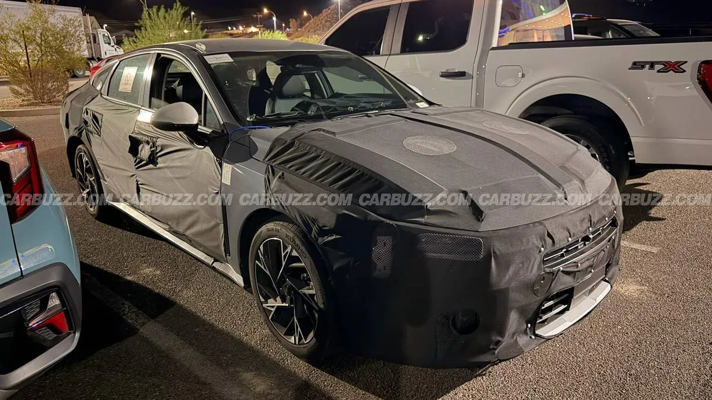
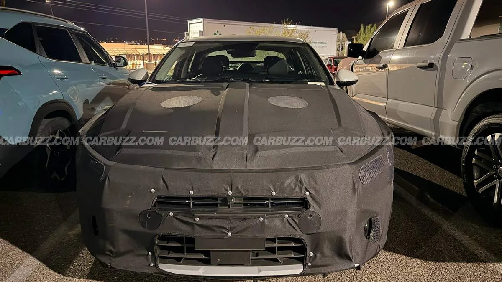
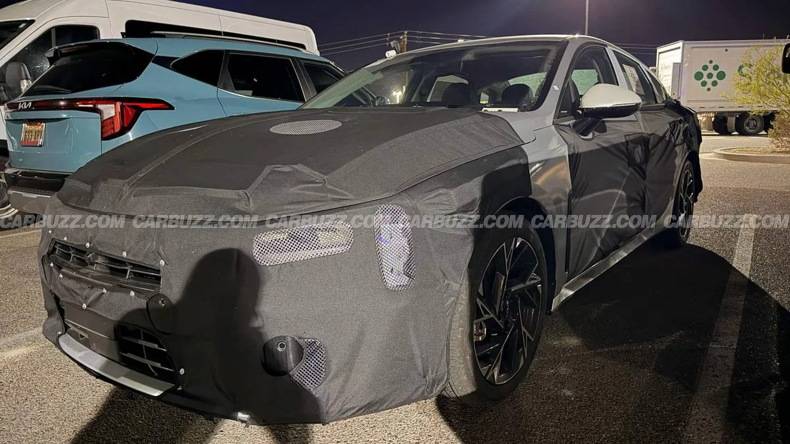

▲ 위장막을 두른 기아 K5 페이스리프트 프로토타입. 프론트 범퍼와 그릴 형태가 완전히 새로워졌다
기아 K5의 페이스리프트 프로토타입이 도로 테스트 중 카메라에 포착됐습니다. 이번 위장차에서 가장 눈에 띄는 변화는 프론트 범퍼와 그릴의 완전한 재설계입니다. 특히 기아 세단 디자인의 상징이었던 '타이거노즈 범프'가 이번 위장차에서는 확인되지 않습니다. 헤드라이트 역시 새로운 형태로 바뀌었고, 리어 스포일러는 검은색 플라스틱 소재로 교체됐습니다.
1. 위장막 속에 숨겨진 파격적인 변화
단순한 상품성 개선을 넘어서는 변화의 폭입니다. 프론트 범퍼는 완전히 새로운 형태로 다시 그려졌고, 기존의 넓적한 그릴 대신 다른 실루엣의 그릴이 확인됩니다. 헤드라이트 유닛도 새로 설계됐으며, 펜더에는 이전에 없던 벤트가 추가됐습니다. 사이드 스커트 역시 재설계돼 측면 실루엣이 한층 다부져 보입니다. 후면에서는 검은색 플라스틱 소재의 리어 스포일러가 새롭게 확인되는데, 이는 기존보다 스포티한 인상을 강조하려는 의도로 풀이됩니다.

▲ 측면에서 본 위장차. 새로운 펜더 벤트와 재설계된 사이드 스커트가 확인된다
2. 왜 하필 '캠리의 그늘'인가
미국 중형 세단 시장은 토요타 캠리가 수십 년째 부동의 1위를 지켜온 격전지입니다. SUV 중심으로 시장이 재편되면서 세단 자체의 존재감이 줄어드는 가운데서도, 캠리는 꾸준한 판매량으로 세단 명맥을 이어가고 있습니다. 반면 K5는 준수한 디자인과 상품성에도 불구하고 브랜드 인지도 면에서 캠리에 밀려온 것이 사실입니다. 이번 페이스리프트가 예사롭지 않은 폭의 디자인 변화를 택한 것도, 세단 시장이 축소되는 상황에서 캠리와의 인지도 격차를 좁히려는 절박함이 반영된 결과로 해석됩니다.
| 부위 | 변화 내용 |
|---|---|
| 그릴·범퍼 | 완전 재설계, 타이거노즈 범프 제거 |
| 헤드라이트 | 새로운 디자인 |
| 펜더 | 신규 벤트 추가 |
| 사이드 스커트 | 재설계 |
| 리어 스포일러 | 검은색 플라스틱 소재 |

▲ 후면에서 본 위장차. 검은색 플라스틱 리어 스포일러가 새롭게 추가됐다
3. 파워트레인은 아직 안갯속
디자인 변화와 달리 파워트레인에 대한 정보는 아직 확인되지 않았습니다. K5는 2025년 업데이트를 통해 새로운 기본 엔진을 도입한 바 있는데, 이번 페이스리프트에서 추가적인 파워트레인 변화가 있을지는 불투명합니다. 다만 최근 기아가 스포티지 등 주요 모델의 하이브리드 전환에 속도를 내고 있는 만큼, K5 역시 하이브리드 라인업 강화 가능성이 거론됩니다.

▲ 도로 테스트 중인 K5 페이스리프트 프로토타입. 파워트레인 관련 정보는 아직 공개되지 않았다
4. 정리 — 2028년형으로 내년 어딘가 출시 예상
이번 페이스리프트는 2028 모델 연도로 미국 시장에 출시될 것으로 예상됩니다. 정확한 공개 시점은 아직 확정되지 않았지만, 세단 시장이 위축되는 상황에서도 기아가 K5에 대한 투자를 이어가겠다는 의지를 분명히 보여주는 대목입니다. 타이거노즈를 지운 새로운 얼굴이 실제로 캠리의 그늘에서 K5를 얼마나 끌어낼 수 있을지, 정식 공개까지 지켜볼 필요가 있습니다.